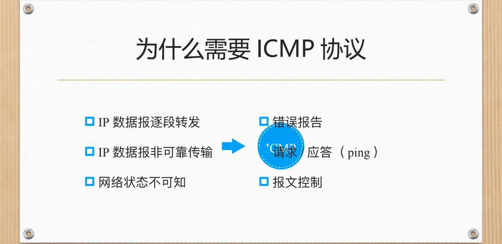
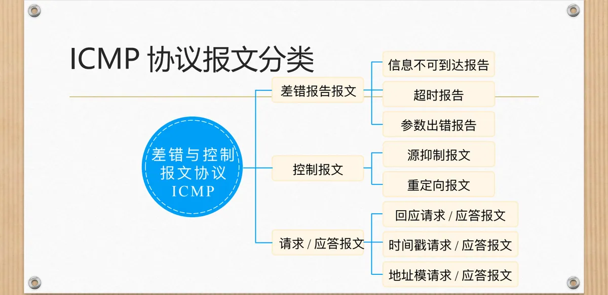
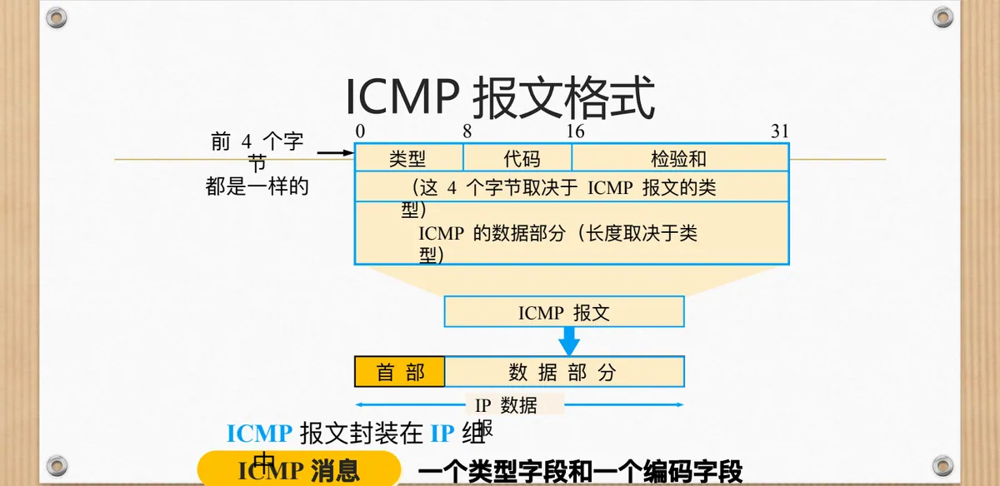
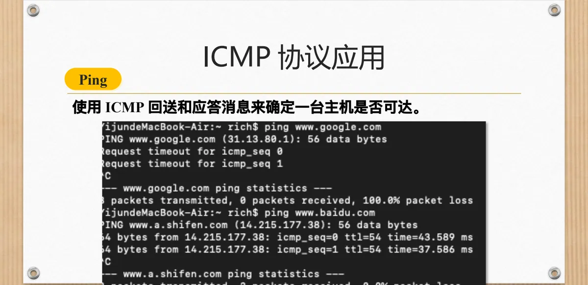
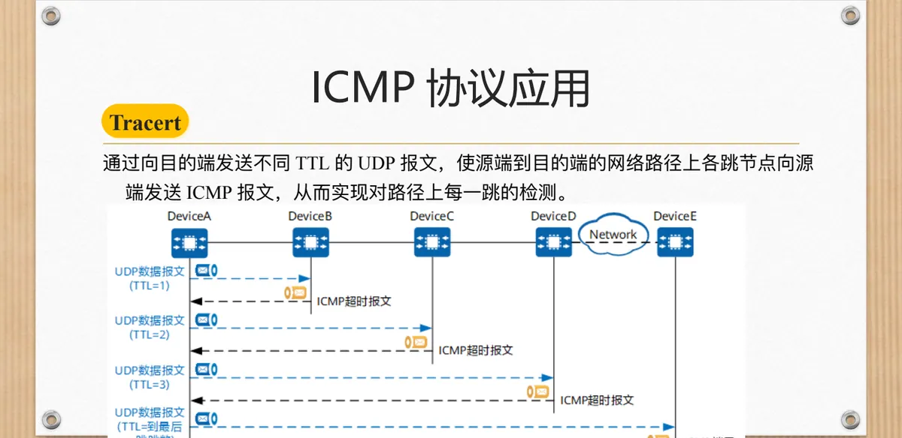

计算机通信与网络 · 第二版讲义 · 第 5 章 网络互联
5.4 因特网控制报文协议ICMP
IP 数据报逐段转发，交付本身又没有任何保证：数据报被丢弃时，源主机不会收到通知。网络层的辅助协议——因特网控制报文协议 ICMP（Internet Control Message Protocol）正是为报告差错、探测连通性而设。本节先讲 ICMP 为什么存在，再交代报文的分类与统一格式，然后逐类看差错报告报文，最后落到 Ping 与 Tracert 两个应用。
1. 为什么网络层还需要一个控制报文协议
ICMP 的存在理由来自 IP 的三个特点。其一，IP 数据报逐段转发：源主机把数据报交给默认网关后，路径完全由沿途各路由器独立决定，它事先无从知晓。其二，IP 数据报非可靠传输：IP 只尽力而为，不保证不丢失、不重复、不乱序，路由器一旦发现检验和出错、生存时间耗尽或找不到去往目的网络的路由，只能丢弃数据报。其三，网络状态不可知：主机只看得到自己这一侧的信息，目的地是否可达、路径是否拥塞，一概不知。
于是网络层除了转发，还得把「路上出了什么事」回告源主机，否则源主机只能干等。ICMP 的作用因此可归为三类：错误报告、请求与应答（即 ping 这类探测）、报文控制。ICMP 报文本身也封装在 IP 数据报中发送，并不把 IP 变成可靠传输，重传与速率调整仍由上层负责可靠传输的协议解决。

2. ICMP 报文的两种类型
ICMP 这个名字里同时含着「差错」与「控制」两重意思，正对应它的两大类别。差错报告报文有五类：信息不可到达报告、参数出错报告、超时报告、重定向报文和源抑制报文；控制报文有三类：回应请求与应答报文、时间戳请求与应答报文、地址模请求与应答报文。
两类报文的发起方式不同：差错报告由路由器或信宿机在转发、交付失败时被动发出；控制报文则由主机主动发起、成对使用，用来查询状态或测试连通性。

3. ICMP 报文的格式与封装方式
各类 ICMP 报文的格式相当统一。最前面 4 个字节永远是类型、代码和检验和：类型指明报文类别，代码给出该类型下的细分原因，检验和检查这段报文在传输中是否出错。接下来 4 个字节的内容取决于类型，在差错报告里可能是未用字段、指针域或网关 IP 地址。再往后是 ICMP 的数据部分，长度也取决于类型——差错报告一般把出错数据报的报头连同其后的前 64 bit 数据装回去，好让源主机辨认是哪个数据报出了问题。
0 8 16 31
类型 代码 检验和
取决于报文类型的 4 个字节
ICMP 的数据部分（长度取决于类型）ICMP 报文封装在 IP 数据报的数据部分中，加上 IP 首部后才交给链路层：它是网络层协议，却要借助 IP 传输，自身传递同样没有保证。

4. 三类常见的差错报告报文
差错报告报文由路由器或信宿机在发现问题、丢弃数据报时发出，传递方向单一：从出错点回到最初发出该数据报的源主机。它们都要附上出错数据报的报头与前 64 bit 数据。
（1）信息不可到达报告（类型 3）
类型 3 报告「数据报送不到目的地」，代码取 0–12 以区分原因。课件列出三种典型情形：信宿机硬件故障或关机、发送者指定的地址不存在、网关不知道去往信宿的路径；代码还细分为目的网络未知、目的主机未知、目的协议不可达、目的端口不可达等。
类型（3） 代码（0–12） 检验和
未用（全 0）
出错数据报报头 + 前 64 bit 数据
……（2）参数出错报告（类型 12）
类型 12 针对数据报首部参数本身有错的情况，代码只有两个取值。代码 0 表示数据报某个参数出错，报文里带指针域，指向出错的那一个字节；代码 1 表示数据报缺少某个选项，没有指针域。这份报告由路由器或信宿机在丢弃参数出错的报文时发出。
类型（12） 代码（0 或 1） 检验和
指针 未用（全 0）
出错数据报报头 + 前 64 bit 数据
……（3）重定向报文（类型 5）
重定向报文针对一种具体的低效：路由转发中某台路由器发现源主机可以把报文直接发给下游路由节点，于是发出类型 5 的报文，通知源主机改用更合适的网关，并带上该网关的 IP 地址。代码含义是：1 为对主机重定向、2 为对服务类型和网络的重定向、3 为对服务类型和主机的重定向。
类型（5） 代码（0–3） 检验和
网关 IP 地址
数据报报头 + 前 64 bit 数据
……还要记住一条性质——ICMP 差错报告与控制报文都是单向传输的报文，发出之后不需确认。重定向能否起作用取决于源主机是否采纳，路径优化主要还是路由器的事（5.5 节）。
5. 常见类型与代码一览
类型与代码共同确定一份报文的具体含义，常见组合如下。
| 类型 | 代码 | 描述 |
|---|---|---|
| 0 | 0 | 回声回答（对 Ping 的回答） |
| 3 | 1 | 目的主机不可达 |
| 3 | 2 | 目的协议不可达 |
| 3 | 3 | 目的端口不可达 |
| 3 | 6 | 目的网络未知 |
| 3 | 7 | 目的主机未知 |
| 4 | 0 | 源抑制（拥塞控制，未用） |
| 8 | 0 | 回声请求（ping） |
| 9 | 0 | 路由器通告 |
| 10 | 0 | 路由器发现 |
| 11 | 0 | TTL 过期 |
| 12 | 0 | IP 首部错误 |
其中值得留意的是：类型 3 用代码把不可达原因分成网络、主机、协议、端口等层次；8/0 与 0/0 构成 Ping 的请求与回答；9/0 与 10/0 用于路由器通告与发现；11/0 的 TTL 过期是 Tracert 逐跳探测的关键；4/0 源抑制未使用。
6. ICMP 的两个典型应用
（1）Ping：判断一台主机是否可达
Ping 使用 ICMP 的回送请求与应答消息，来确定一台主机是否可达。源主机发出 8/0 的回声请求，目的主机回以 0/0 的回声回答：请求发得出去、回答收得回来，就说明这条路径双向都通。它用的是控制报文，属于主动探测。

（2）Tracert：确定路径上的每一跳
Tracert 回答的是路径问题：到目的主机沿途经过哪些路由器。做法是向目的端发送不同 TTL 的 UDP 报文。生存时间 TTL（Time To Live）每经过一台路由器减 1，减到 0 时该路由器丢弃报文，并向源端回送一份类型 11 的 ICMP 超时报告。源端先发 TTL 为 1 的报文，第一跳回报；再发 TTL 为 2 的，第二跳回报；如此依次递增，直到报文到达目的主机，路径上每一跳便都得到检测。

本节小结
- IP 只提供尽力而为的非可靠交付，源主机对网络状态无从得知；ICMP 补上的是错误报告、请求与应答、报文控制三条通道，但它自身也封装在 IP 数据报里，并不使 IP 变得可靠。
- ICMP 报文分差错报告与控制两大类，前 4 个字节固定为类型、代码与检验和，其余取决于类型；差错报告一律附上出错数据报的报头与前 64 bit 数据。
- 差错报告由路由器或信宿机在丢弃数据报时发出，方向单一、不需应答：信息不可到达（类型 3，代码 0–12）、参数出错（类型 12，代码 0 或 1）、重定向（类型 5，代码 0–3）各有字段安排。
- 类型与代码的组合是查阅 ICMP 的索引：8/0 与 0/0 构成 Ping 的请求与回答，11/0 的 TTL 过期支撑 Tracert 的逐跳探测；这两项应用依靠的仍是 5.3 节的 IP 数据报格式与 5.5 节的选路转发。